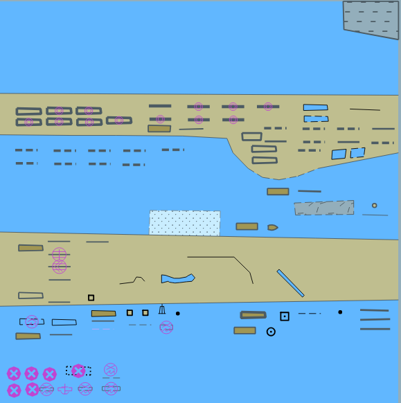
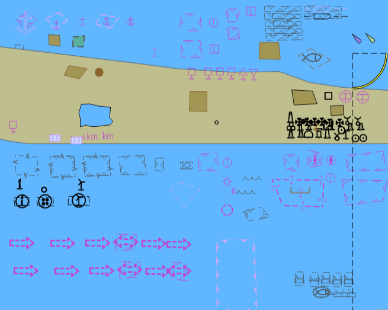

Publication Date: 2023-03-17
Approval Date: 2023-12-31
Submission Date: YYYY-MM-DD
Reference number of this document: IHO S-164
Reference URL for this document: http://www.iho.int/doc/S-64-ID
Category: IHO Standard
Editor: Jonathan Pritchard, IIC technologies
Title: S-164 Version 1.0.0 Build 0.2.2 1.0.0 Build 0.2.2
INTERNATIONAL HYDROGRAPHIC ORGANISATION
IHO TEST DATASETS IN ECDIS Edition 1.0.0 - 2023-03-17
INSTRUCTION MANUAL FOR THE USE OF IHO TEST DATASETS IN ECDIS
Publication S-164 1.0.0
6 Published by the International Hydrographic Organisation
4b quai Antoine 1er
Principauté de Monaco
Tel: (377) 93.10.81.00 Fax: (377) 93.10.81.40
E-mail: info@iho.int Web: www.iho.int
- 1. Introduction
- 1.1. Change Control History
- 1.2. Introduction
- 1.3. Acknowledgements
- 1.4. Acronyms and Terms
- 1.5. References
- 1.6. Key Documents Organizations and Relationships
- 1.7. Structure of the Instruction Manual
- 1.8. Organisation and Coverage of the TDS
- 1.9. Required Test Items and USe of the TDS
- 1.10. Notes on ECDIS screen samples (still required?)
- 2. Dataset Loading and Unloading
- 2.1. Loading of Unencrypted datasets
- 2.2. Automatic Updates of Unencrypted ENCs
- 2.2.1. Loading Corrupted update
- 2.2.2. Loading Sequential Update
- 2.2.3. Loading update in an invalid sequence
- 2.2.4. 2.2.4 Loading update of newer edition
- 2.2.5. Loading update of older edition
- 2.2.6. Loading a re-issue of a data set
- 2.2.7. Loading cancellation update
- 2.2.8. Rejection of automatic update
- 2.3. ManualUpdates
- 2.4. Loading and Updating using SENC delivery (if provided)
- 2.5. Loading and Updating of Encrypted ENCs
- 3. Dataset Display
- 4. Display related functoinality
- 5. Detection and Notification of Navigational Hazards
- 6. S-57 Testing
- 7. Testing of Dual Fuel Mode capability
- 1. Introduction
- 1.1. Change Control History
- 1.2. Introduction
- 1.3. Acknowledgements
- 1.4. Acronyms and Terms
- 1.5. References
- 1.6. Key Documents Organizations and Relationships
- 1.7. Structure of the Instruction Manual
- 1.8. Organisation and Coverage of the TDS
- 1.9. Required Test Items and USe of the TDS
- 1.10. Notes on ECDIS screen samples (still required?)
- 2. Dataset Loading and Unloading
- 2.1. Loading of Unencrypted datasets
- 2.2. Automatic Updates of Unencrypted ENCs
- 2.2.1. Loading Corrupted update
- 2.2.2. Loading Sequential Update
- 2.2.3. Loading update in an invalid sequence
- 2.2.4. 2.2.4 Loading update of newer edition
- 2.2.5. Loading update of older edition
- 2.2.6. Loading a re-issue of a data set
- 2.2.7. Loading cancellation update
- 2.2.8. Rejection of automatic update
- 2.3. ManualUpdates
- 2.4. Loading and Updating using SENC delivery (if provided)
- 2.5. Loading and Updating of Encrypted ENCs
- 3. Dataset Display
- 4. Display related functoinality
- 5. Detection and Notification of Navigational Hazards
- 6. S-57 Testing
- 7. Testing of Dual Fuel Mode capability
COPYRIGHT
Copyright © 2023 International Hydrographic Organization. 3 To obtain additional rights of use, visit http://iho.int/
© Copyright International Hydrographic Organization 2023 This work is copyright. Apart from any use permitted in accordance with the Berne Convention for the Protection of Literary and Artistic Works (1886), and except in the circumstances described below, no part may be translated, reproduced by any process, adapted, communicated or commercially exploited without prior written permission from the Secretariat of the International Hydrographic Organization (IHO).
Copyright in some of the material in this publication may be owned by another party and permission for the translation and/or reproduction of that material must be obtained from the owner.
This document or partial material from this document may be translated, reproduced or distributed for general information, on no more than a cost recovery basis. Copies may not be sold or distributed for profit or gain without prior written agreement of the IHO Secretariat and any other copyright holders.
WARNING
No warnings are applicable to this document
LICENSE AGREEMENT
In the event that this document or partial material from this document is reproduced, translated or distributed under the terms described above, the following statements are to be included:
“Material from IHO publication [reference to extract: Title, Edition] is reproduced with the permission of the IHO Secretariat (Permission No ……./…) acting for the International Hydrographic Organization (IHO), which does not accept responsibility for the correctness of the material as reproduced: in case of doubt, the IHO’s authentic text shall prevail. The incorporation of material sourced from IHO shall not be construed as constituting an endorsement by IHO of this product.”
“This [document/publication] is a translation of IHO [document/publication] [name]. The IHO has not checked this translation and therefore takes no responsibility for its accuracy. In case of doubt the source version of [name] in [language] should be consulted.” The IHO Logo or other identifiers shall not be used in any derived product without prior written permission from the IHO Secretariat.
1. Introduction
Introduction to IHO S-64 version 4
1.2. Introduction
The International Hydrographic Organization (IHO) Test Data Sets (TDS) for Electronic Chart and Display Information System (ECDIS) have been produced to fulfil the requirement for a data set necessary to accomplish all ECDIS testing requirements as outlined in the IEC 61174 standard. The TDS has been published as IHO Publication Number 164 and consists of numerous data sets required for testing as well as this guide, the TDS Instruction Manual (TIM). The TIM provides supporting documentation about the organization, understanding, and use of the ENC TDS and is intended to be used along with the data sets included in the TDS. It aims to provide appropriate comments about each test including the information about the most suitable data elements, their location and the expected test results.
1.3. Acknowledgements
Edition 1.0.0 and its subsequent clarifications has been produced with assistance from many expert contributors and members of the IHO S-100 WG, the ENC Working Group (ENCWG), and associated expert contributors; their input during the drafting and revision process has been invaluable.
1.4. Acronyms and Terms
This publication makes extensive use of terms and acronyms described in the IHO S-32 Standard. Additionally, the following acronyms are frequently used:
-
TDS – Test Data Sets
-
TIM - TDS Instruction Manual
-
EUT – Equipment Under Test
1.5. References
This publication provides tests based on the requirements documented in IHO standards. References to the source for a specific test are provided within this document. As specified in the IEC 61174 standard the tests provided are used to ensure conformance to the ECDIS requirements laid out in the IMO performance standard for ECDIS.
Normative References:
-
IHO S-100 Edition 5.0.0
-
IHO S-98 Edition 1.0.0
Informative References:
-
IHO S-32 - Hydrographic Dictionary (provides ECDIS related definitions)
-
IHO S-65 – ENC Production Guidance
1.6. Key Documents Organizations and Relationships
The development and application of the TDS involves several organizations and related specifications (see Figure 1). The TDS was produced by the IHO to allow for the complete testing of ECDIS equipment (hardware and software) vis-à-vis the ECDIS Performance Standard. The ECDIS Performance Standard is specified by the International Maritime Organization (IMO) in MSC.232(82), and methods for testing this standard are the responsibility of the International Electrotechnical Commission (IEC) which publishes these requirements in document IEC 61174.
All standards are subject to revision. Therefore, users of these standards must use the most recent editions of the standards indicated below. Members of IEC and ISO maintain registers of currently valid international standards.
The S-164 test data set contains both encrypted and unencrypted data. The inclusion of an encrypted dataset, conforming to S-100 Part 15, is so that ECDIS data loading and management operations can be tested under IEC 61174. There are also unencrypted datasets which test visualisation and operational aspects of the ECDIS. S-164 also contains datasets which test the dual fuel mode of ECDIS, mixing S-57 and S-101 electronic navigational charts.
1.7. Structure of the Instruction Manual
This document consists of an introduction followed by tests arranged over 4 major sections in a task based layout. All tests are listed in a common format which is shown in the example below:
Test Reference |
(S-164 reference) |
IHO Reference |
(S-100 Part 9/S-98) |
Test Description |
A short description of what the test covers. |
Setup |
The configuration required to perform the test including datasets to be loaded, settings to be applied and any other information as required. Where appropriate this should use the form centre the display on “location” set scale to “scale value”.(within this document the scale value assumes the EUT has a screen of the minimum specified size) |
Action |
The action which the test executor must perform. |
Results |
The result which the test executor must observe to complete the test |
Example Table
1.8. Organisation and Coverage of the TDS
The TDS contains a named directory for each section of the TIM which requires test data. Depending on the test requirement, the folder contains an S100_ROOT directory containing the files of the exchange set (CATALOG.XML etc…), plus any required catalogues, updates or other optional/related files, e.g. .TIF, .TXT necessary).
Each exchange set also contains a README.TXT file, which may have additional information regarding the content or usage of the files.
The TDS data for encrypted data, located in section 2.5, contains multiple named exchange sets, each with their own S100_ROOT directory and full test scripts describing how to use the data.
The location (or path) of ENC exchange set and/or ENC cell will be indicated using italic notation, e.g. PowerUp/S100_ROOT/S-101/DATASET_FILES/101AA00AA4X000.000.
Some tests require specific datasets to be loaded from exchanges sets instead of the entire exchange set. This should be viewed as a requirement. Most systems enable “browsing” and can load files from almost any location including removable media. Consult with the equipment manufacturer for further information.
1.9. Required Test Items and USe of the TDS
This section lists the items required for the execution of Tests specified in this document and how the TDS should be used. The following items are required:
-
IHO S-98 1.0.0 including an ECDIS Chart 1 and colour differentiation diagrams. If the manufacturer provides their own presentation library, Chart 1 has to be adapted accordingly.
-
IHO S-164 test data sets for ECDIS which includes both encrypted and unencrypted datasets, and updates, together with the associated instruction manual.
-
SENC test data sets, if supported from each SENC distributor.
ECDIS Chart 1 and colour differentiation diagrams must be acquired and installed on the equipment under test (EUT) by the manufacturer, prior to the beginning of the tests.
The second item, the IHO TDS, is provided as part of S-164, including the encrypted data and its test scripts. This document is to be considered the “Instruction Manual”. The IHO TDS may be upgraded from time to time to correct residual anomalies and ensure that the results of the tests conform to the description in this Manual. It is important to ensure that the tests are conducted with the latest version posted on the IHO web site at http://www.iho.int > (ENCs & ECDIS). The version number (1.0.0) will remain the same as long as the corrections do not impact this document.
The third item on the list, SENC test data set, if supported, must be provided by the manufacturer.
1.10. Notes on ECDIS screen samples (still required?)
Light Descriptions Between the light characteristics abbreviation and the colour attribute it is acceptable for the ECDIS to display the light description text with or without a space. There must be a space between the light colour and signal period, for example: Fl W 30s7m10M or FlW 30s7m10M are both acceptable options Further details are given in S-52 Presentation Library edition 4.0.2 Part 1 10.6.3 Light Description Text Strings
Light Descriptions for Sectored Lights The light description text string is normally not used for sector lights because it would cause clutter however OEMs are not prevented from doing so. Where OEMs have displayed the text strings in their ECDIS they must provide a method to select/deselect them from the ECDIS display. Further details are available in S-52 Presentation Library edition 4.0.2 Part 1 LIGHTS06 conditional symbology procedure.
Centred Symbols There is no algorithm specified for OEMs to calculate the centre of an area. Therefore depending on the ECDIS there maybe instances where the centred symbol is not visible. If the centred symbol is not visible in the ECDIS display the zoom level should be increased until the symbol becomes visible.
2. Dataset Loading and Unloading
2.1. Loading of Unencrypted datasets
2.1.1. Preparation and Power Up
Test Reference |
IHO Reference |
IEC61174 / 4.1.1 |
Test Description |
Loading of initial datasets and indication of own ship stationary position. |
Setup |
Load the following cells from the exchange set: PowerUp
with the following settings:
|
Action |
Load cells and view the chart display. |
Results |
With the charts displayed the own ship shall be placed at the jetty in Micklefirth. Figure 2. 101AA004X0000.000
After loading of 101AA004X0000.000, displayed scale 1:50 000 Note: Screen plot above is based on the full text NATSUR attribute. To reduce undue clutter in the ECDIS chart display, the use of the abbreviations of the NATSUR attribute is recommended (see screen plot on next page). Note: Within this test dataset there are two omni directional lights co-located at 32º34.688S, 060º54.955E, this case is not a real-world example, as such the ECDIS may show a red-light sector. |
2.1.2. Number and date in chart library
Test Reference |
IHO Reference |
IEC61164 / 4.1.1 |
Test Description |
|||||||||||||||
Loading of initial datasets and confirmation of information in chart library. |
|||||||||||||||
Setup |
|||||||||||||||
Load all cells from the exchange set PowerUp (was 2.1.1 Power Up\ENC_ROOT) |
|||||||||||||||
Action |
|||||||||||||||
Check that in the chart library the information about the cells is provided as follows
|
|||||||||||||||
Results |
|||||||||||||||
The information in the chart library shall be identical to the above table. |
2.1.3. Load additional cell and check chart library
Test Reference |
IHO Reference |
IEC61164 / 4.4.1 |
Test Description |
Loading additional cell and confirmation of its addition to the chart library. |
Setup |
As for test 2.1.2 |
Action |
Load the following cell from the exchange set Settings (was 3.3 Settings\ENC_ROOT\GB4X0001.000)
Check that in the chart library the details of the cell have been added. |
Results |
The information in the chart library shall reflect the cell loaded and the chart coverage shall have changed accordingly |
2.1.4. Remove cell and check chart library
Test Reference |
IHO Reference |
IEC61164 / 4.4.1 |
Test Description |
Removing a cell and confirmation of its removal from the chart library. |
Setup |
As on completion of test 2.1.3 |
Action |
Remove the following cell
Check that in the chart library the details of the cell have been removed. |
Results |
The information in the chart library shall reflect the cell removed and the chart coverage shall have changed accordingly. |
2.1.5. Loading of corrupt data.
Test Reference |
IHO Reference |
IEC61164 / 4.4.1 |
Test Description |
Loading of Corrupted Data |
Setup |
- |
Action |
Load the following exchange set: CorruptData (was 2.1.5 Loading Corrupt Data\ENC_ROOT\GB5X01NE.000) |
Results |
The EUT shall generate a warning when loading cell 101AA005X01NE.000 is attempted and reject installation. |
2.2. Automatic Updates of Unencrypted ENCs
2.2.1. Loading Corrupted update
Test Reference |
IHO Reference |
IEC61174 / 4.4.1 |
Test Description |
Loading corrupt update files. |
Setup |
Load the following cell from the exchange set
|
Action |
Load the following exchange set * CorruptUpdate (Was 2.2.1 Corrupt Update\ENC_ROOT\) |
Results |
The update process shall stop, the update flagged as invalid, and the user provided with an appropriate message. |
2.2.2. Loading Sequential Update
Test Reference |
IHO Reference |
IEC61174 / 4.4.1 |
Test Description |
Loading correct sequential update files. |
Setup |
As for test 2.1.2 Load the following 5 updates one by one and check the plots after each successfully applied update To create the same results as the S-164 plots. 001 002 003 004 005 |
Action |
Load the following five updates: 2.2.2 Loading of Updates\ENC_ROOT\ |
Results |
The update process shall install all updates (up to update no. 5) and indicate it in an appropriate summary report which shall contain the following information:
Review of updates shall be performed after the update process is completed and the updates have been applied to the SENC. Review the updates by selecting the given date range and confirm that display is as available in the corresponding screen plot. Note Manufacturers can use their own algorithms for calculating the position of centred symbols S-52 PL 8.5.1. |
2.2.3. Loading update in an invalid sequence
Test Reference |
IHO Reference |
tbc |
Test Description |
Loading corrupt update files. |
Setup |
Load the following cell: 101AA00AA5X01SW.000 (was 2.1.1 Power Up\ENC_ROOT\GB5X01SW.000) |
Action |
Load the following exchange set: CorruptUpdate (was 2.2.1 Corrupt Update\ENC_ROOT\) |
Results |
The update process shall install the updates up to update no. 3 and reject the installation of updates no. 4 and 5 with a permanent indication, “Chart information not up-to-date” when this chart is in use (either displayed or used as largest scale available for the chart related alerts and indications) until the not up- to-date situation is removed by successful application of a re-issue, a new edition or complete sequence of updates. |
2.2.4. 2.2.4 Loading update of newer edition
Test Reference |
IHO Reference |
tbc |
Test Description |
Loading update file of a newer edition than base cell installed. |
Setup |
As result of test 2.2.3 Note: Following cell is already loaded: 2.1.1 Power Up\ENC_ROOT\GB5X01SW.000 (edition 1) |
Action |
|
GB5X01SW.001 (edition 2) 2. Display installed chart. 3. Install the following base cell: 2.2.5 Good Base Cells\ENC_ROOT\GB5X01SW.000 (edition 2); and load the following update: 2.2.4 Loading of New Update\ENC_ROOT |
GB5X01SW.001 (edition 2) 4. Display installed chart. |
Results |
IMAGE After loading of GB5X01SW.000 2nd edition, displayed scale 1:20 000 Note: Screen plot is based on the full text NATSUR attribute. To reduce undue clutter in the ECDIS chart display, the use of the abbreviations of the NATSUR attribute is recommended. After loading of GB5X01SW.001 2nd edition, displayed scale 1:20 000, all objects and their geometries being subject to this update review are highlighted After loading of GB5X01SW.001 2nd edition, displayed scale 1:20 000, update review highlight filtered for real changes (example 1) After loading of GB5X01SW.001 2nd edition, displayed scale 1:20 000, update review highlight filtered for real changes (example 2 |
2.2.5. Loading update of older edition
Test Reference |
IHO Reference |
tbc |
Test Description |
Loading update file of an older edition than base cell installed. |
Setup |
Load the following cell: 2.2.5 Good Base Cells\ENC_ROOT\GB5X01SW.000 (edition 2) |
Action |
Load the following update: 2.2.5 Old Update\ENC_ROOT\ (edition 1) |
Results |
The update shall not be applied successfully and the system shall provide an indication (either on screen or in an error log) the reason the update was not applied, for example “Incorrect Edition Number 1 [of update]: expecting 2” |
2.2.6. Loading a re-issue of a data set
Test Reference |
IHO Reference |
tbc |
Test Description |
Loading a re-issue of a data set. |
Setup |
As result of test 2.1.1 Load the following cell: 2.1.1 Power Up\ENC_ROOT\GB5X01SW.000 (edition 1) 2.1.1 Power Up\ENC_ROOT\GB5X01SE.000 2.1.1 Power Up\ENC_ROOT\GB5X01NE.000 |
Action |
Load the following updates in sequence: 2.2.6 Re-issue\GB5X01SW_001\ENC_ROOT\GB5X01SW.001 (edition 1) 2.2.6 Re-issue\GB5X01SW_RE-ISSUE\ENC_ROOT\GB5X01SW.000 (re-issue, edition 1, update 3 included) 2.2.6 Re-issue\GB5X01SW_004 \ENC_ROOT\GB5X01SW.004 (edition 1) Note: Data for updates 2 and 3 of GB5X01SW are included within the reissue GB5X01SW.000 and therefore GB5X01SW.002 and GB5X01SW.003 are not included in the dataset. |
Results |
After loading of GB5X01SW.001 1st edition, displayed scale 1:20 000 Note: Screen plot is based on the full text NATSUR attribute. To reduce undue clutter in the ECDIS chart display, the use of the abbreviations of the NATSUR attribute is recommended. |
2.2.7. Loading cancellation update
Test Reference |
IHO Reference |
tbc |
Test Description |
Loading cancellation update. |
Setup |
Load the following cell: 2.1.1 Power Up\ENC_ROOT\GB4X0000.000 |
Action |
Load the following update: 2.2.7 Cancellation\ENC_ROOT\GB4X0000.001 |
Results |
The system shall report any cell(s) that have been identified as cancelled at load time. A message shall be displayed informing the user of the cell name. Depending on the method adopted by the OEM for managing cancelled cells one of the following conditions must be observed: 1. The cancelled cell cannot be viewed in the ECDIS 2. The cancelled cell can be viewed in the ECDIS with the warning message defined in S-63 and specified below: “Cell <name> has been cancelled and may not be up to date. Under no circumstances should it be used for primary navigation”. Clarification: Systems that remove cells without consulting the user do not have to provide a warning message at load time. |
2.2.8. Rejection of automatic update
Test Reference |
IHO Reference |
tbc |
Test Description |
Manual rejection of an automatic update. |
Setup |
As result of test 2.1.1 Load the following cell: 2.1.1 Power Up\ENC_ROOT\GB5X01SW.000 (edition 1) 2.1.1 Power Up\ENC_ROOT\GB5X01SE.000 2.1.1 Power Up\ENC_ROOT\GB5X01NE.000 |
Action |
Load the following update: 2.2.2 Loading of Updates\ENC_ROOT\GB5X01SW.001 (edition 1, update 1) After loading of the update, manually annotate the objects of the update as rejected using the deletion available in the manual update method. |
Results |
Load the following update: 2.2.2 Loading of Updates\ENC_ROOT\GB5X01SW.001 (edition 1, update 1) After loading of the update, manually annotate the objects of the update as rejected using the deletion available in the manual update method. The objects from the update shall remain in display as annotated by the deletion mark of the manual update method. |
2.3. ManualUpdates
Test Reference |
IHO Reference |
tbc |
Test Description |
Manual updates |
Setup |
Load the following cell: 2.1.1 Power Up\ENC_ROOT\GB5X01SW.000
|
Action |
|
Results |
| 2. Set viewing date before 20150220. The ENC in the ECDIS should match the corresponding graphical plot shown below. Manual updates shall be distinguishable as described in S-52, 2.3.4. |
|---|
Set viewing date after 20150220. The ENC in the ECDIS should match the corresponding graphical plot shown above. |
|
|
7.a-g. Review of manual updates shall be available on demand. Above is review of updates a-g |
7.h-j. Review of manual updates shall be available on demand. Above is review of updates h-j.
|
2.4. Loading and Updating using SENC delivery (if provided)
Test Reference |
IHO Reference |
tbc |
Test Description |
Loading and Updating using SENC delivery (if provided). |
Setup |
If the ECDIS supports SENC delivery (accepting a SENC resulting from conversion of ENC to SENC ashore, in accordance with IHO Resolution 4/2002 as amended (see IHO Publication M-3), then the manufacturer shall supply a SENC version of the IHO S-164 test data set for each SENC format for which SENC delivery is to be approved. Note: The test data sets should be provided by the SENC producers for each SENC distributor approved for use with the EUT. |
Action |
For each SENC delivery format perform the following tests from section 2.1 and 2.2 :
|
Results |
For each SENC test data set supplied, there shall be compliance with the corresponding test results noting that the outcome of each resultant update stage should be identical to that which results from application of the updates supplied in the above mentioned tests. The ECDIS shall provide an update mechanism for delivered SENCs that is not inferior to the update mechanism of ENCs. |
2.5. Loading and Updating of Encrypted ENCs
2.5.1. Organization of the Encrypted TDS
(rewrite when encrypted data tests are finalised) The tests for loading encrypted data are stored in the root directory “IHO S-164 Part 15”. The tests are subdivided into seven categories. Each category contains a number of tests which have corresponding test scripts provided in this section.
There are additional tests provided in “ENC Data Management [Optional]”. These are provided to assist manufacturers who have included additional ENC Data Management functions into their systems and are fully described in sections 2.5.7i), 2.5.7j) and 2.5.7k).
Test Definitions
Default test data parameters
The ENC permits that accompany the encrypted ENC test data have been generated for the User Permit specified below. To carry out the tests described in this document manufacturers will have to create a hard lock device or program their software with the following manufacturer information and hardware ID (HW_ID).
(insert IHO parameters) Manufacturer ID: (M_ID) = 10 (or 3130 hexadecimal) Manufacturer Key: (M_KEY) = 10121 (or 3130313231 hexadecimal) Hardware ID: (HW_ID) = 12345 (or 3132333435 hexadecimal) USERPERMIT = 66B5CBFDF7E4139D5B6086C23130
This is the official manufacturer information issued for and by the Scheme Administrator (IHO secretariat) and is provided expressly for the purpose of producing encrypted ENC test data. This data is provided specifically for the following purposes:
-
OEM Type approval against the S-164 Test Data for Encrypted ENCs (This document).
-
OEM and Data Server self certification of their systems against S-100 Part 15.
Test Certificate and Public Key
The official IHO Scheme Administrator Certificate should be used in the test data unless a different certificate or public key file is specified in the test description (insert link).
3. Dataset Display
3.1. Display of ENC datasets
3.1.1. Display Base Category
Test Reference |
3.1.1 |
IHO Reference |
S-52 14.3 |
Test Description |
The purpose of the test is to verify by observation that ECDIS correctly displays all ENC objects included in the IMO Display Base category. The test is performed by loading to ECDIS test S-57 cell and checking display against graphical plots. The test ENC cell AA5DDBASE.000 contains all ENC objects belonging to Display Base according to the IHO S-52 Presentation Library.. |
Setup |
Load cell AA5DBASE.000 from 3.1 ENC Display\Base\ENC_ROOT with the following settings:
|
Action |
Check ENC symbols shown in the ECDIS against the graphical plot. |
Results |
The ENC in the ECDIS should be shown like in the picture below (scale 1:60 000).

Figure 3. Test 3.1.1 image
|
3.1.2. Standard Display Category
Test Reference |
3.1.2 |
IHO Reference |
S-52 14.3 |
Test Description |
The purpose of the test is to verify by observation that ECDIS correctly displays all ENC objects included in the IMO Standard Display category. The test is performed by loading to ECDIS test S-57 cell and checking display against graphical plots. The test ENC cell AA5STNDR.000 contains depth and land areas from Display Base plus all ENC objects belonging to Standard Display according to the IHO S-52 Presentation Library. The objects belonging to Standard Display are to be shown if Standard Display is selected in ECDIS HMI and should be disappearing in the Display Base mode. |
Setup |
Load cell AA5STNDR.000 from 3.1 ENC Display\Standard\ENC_ROOT with the following settings:
|
Action |
Switch on Standard Display. Check ENC symbols shown in ECDIS against graphical plot. |
Results |

Figure 4. Test 3.1.2 image
|
6. S-57 Testing
6.1. Introduction
This section describes how S-57 functionality shall be tested. The idea is that the TDS Manual for S-57 is referenced from this section and the data is unchanged from that which is currently used.
This is, therefore, a very short section.
It should also explain how the S-57 data forms part of DF mode testing.